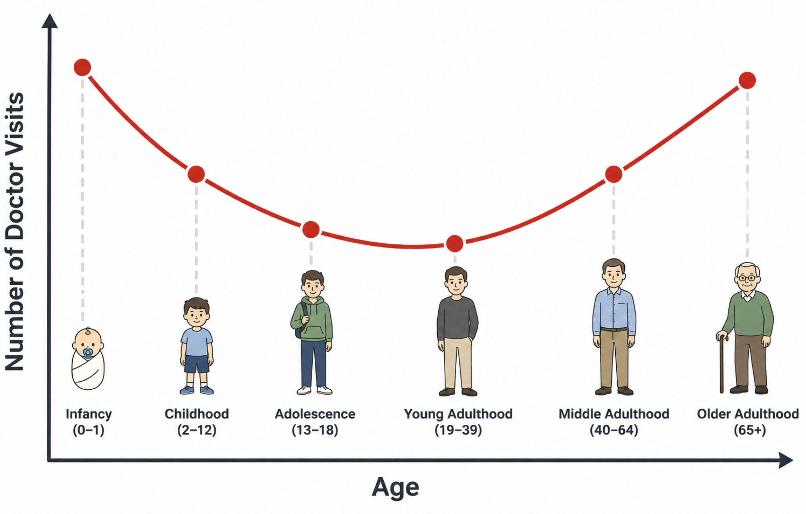

viewof selectedFns = Inputs.checkbox(
new Map([["Sigmoid", "sigmoid"], ["ReLU", "relu"], ["Tanh", "tanh"]]),
{ value: ["sigmoid"], label: "Show functions:" }
)
viewof showDeriv = Inputs.toggle({ label: "Overlay derivatives (dashed)", value: false })
// ── Function definitions ──────────────────────────────────────────────────────
fnDefs = ({
sigmoid: {
f: x => 1 / (1 + Math.exp(-x)),
df: x => { const s = 1 / (1 + Math.exp(-x)); return s * (1 - s); },
color: "#5c6bc0", label: "sigmoid(x)"
},
relu: {
f: x => Math.max(0, x),
df: x => x >= 0 ? 1 : 0,
color: "#e53935", label: "ReLU(x)"
},
tanh: {
f: x => Math.tanh(x),
df: x => 1 - Math.tanh(x) ** 2,
color: "#2e7d32", label: "tanh(x)"
}
})
xs = Array.from({ length: 400 }, (_, i) => -6 + i * (12 / 399))
// ── Build marks ───────────────────────────────────────────────────────────────
activationMarks = selectedFns.flatMap(fn => {
const { f, df, color, label } = fnDefs[fn]
const main = Plot.line(
xs.map(x => ({ x, y: f(x) })),
{ x: "x", y: "y", stroke: color, strokeWidth: 2.5 }
)
if (!showDeriv) return [main]
const deriv = Plot.line(
xs.map(x => ({ x, y: df(x) })),
{ x: "x", y: "y", stroke: color, strokeWidth: 1.8,
strokeDasharray: "5,3", opacity: 0.65 }
)
return [main, deriv]
})
// ── Legend HTML ───────────────────────────────────────────────────────────────
legendHTML = html`<div style="display:flex;gap:1.2rem;flex-wrap:wrap;margin-bottom:0.5rem;font-size:0.82rem;">
${selectedFns.map(fn => {
const {color, label} = fnDefs[fn]
return html`<span>
<svg width="28" height="10"><line x1="0" y1="5" x2="28" y2="5" stroke="${color}" stroke-width="2.5"/></svg>
${label}
${showDeriv ? html` <svg width="28" height="10"><line x1="0" y1="5" x2="28" y2="5" stroke="${color}" stroke-width="1.8" stroke-dasharray="4,2" opacity="0.7"/></svg> d/dx` : ""}
</span>`
})}
</div>`
// ── Plot ─────────────────────────────────────────────────────────────────────
activationPlot = Plot.plot({
width: 580,
height: 300,
marginLeft: 60,
marginBottom: 50,
style: { fontSize: "14px" },
x: { label: "x", domain: [-6, 6], grid: true, labelAnchor: "center", labelArrow: "none", labelOffset: 36 },
y: { label: "y", domain: [-1.3, 1.3], grid: true, labelAnchor: "center", labelArrow: "none", labelOffset: 50 },
marks: [
Plot.ruleY([0], { stroke: "#ccc", strokeWidth: 1 }),
Plot.ruleX([0], { stroke: "#ccc", strokeWidth: 1 }),
...activationMarks
]
})
html`${legendHTML}${activationPlot}`Lecture 2: Multi-Layer Perceptrons & Backpropagation
Lecture 2: Multi-Layer Perceptrons & Backpropagation
Recap. Recall from Lecture 1 that both linear regression and logistic regression are considered linear models. In this lecture, we study: What does it mean for a model to be linear, precisely? What are the limitations of linear models? what kinds of relationships can they not capture? How can we overcome these limitations, and how do we train the resulting model?
Limitations of Linear Models
Definition. A model \hat{y} = wx + b is a linear model if an increase or decrease in any feature must always increase or decrease the output by the same proportional amount, regardless of the current value of x.
More precisely, two properties hold simultaneously:
- Monotonicity. If w > 0, then x \uparrow \Rightarrow \hat{y} \uparrow always (and vice versa for w < 0). The direction never flips.
- Constant effect. The rate of change \dfrac{\partial\hat{y}}{\partial x} = w is the same everywhere. Graphically, \hat{y} vs x is a straight line.
When linearity fails
Some relationships are approximately linear. For instance, larger houses tend to cost more, and a straight line is a reasonable first approximation. But many relationships are not. Consider doctor visits vs. age: visits are very frequent in infancy, drop through young adulthood, then climb again in old age. This U-shaped curve is neither monotonic nor linear.


A classic ML solution is hand-engineering: take \log x to linearize an exponential relationship. In deep learning we reject that. We learn the features automatically.
The Multi-Layer Perceptron
The central idea in deep learning: build complex models by composing many simple, differentiable functions.
Why stacking linear layers doesn’t help
Try composing two linear layers:
H = XW_1, \qquad O = HW_2
Substituting: O = X\underbrace{W_1 W_2}_{=:\,W}. The product of two matrices is a matrix, so O = XW is still a single linear layer.
Warning
Key fact. Composing linear (affine) transformations always yields another linear transformation. No matter how many linear layers you stack, the composition is equivalent to a single affine map. Depth adds no expressive power without nonlinearity.
Adding nonlinearity
The fix: insert a nonlinear function \sigma (the activation function or nonlinearity) between the linear layers:
\boxed{H = \sigma(XW_1 + b_1), \qquad O = HW_2 + b_2}
Because \sigma is nonlinear, O is now a nonlinear function of X.
Element-wise application. Inside neural networks \sigma is applied element-wise:
h_i = \sigma(x_i)
Each output element depends on exactly one input element (\sigma is a scalar function of a scalar) replicated independently at every position. This is in contrast to softmax (from Lecture 1), where every output depends on all inputs.
Architecture and Terminology
The architecture above is a two-layer fully-connected multi-layer perceptron (MLP). Every input is connected to every hidden unit, and every hidden unit to every output, hence fully connected. The names for this architecture:
| Name | Notes |
|---|---|
| Multi-layer perceptron (MLP) | Historical; from the Perceptron (Rosenblatt 1958) |
| Feed-forward (neural) network | Preferred modern term |
| Fully connected network | Emphasises all-to-all connectivity |
| Dense layer / dense network | Common in Keras / TensorFlow |
Activation Functions
What should \sigma be? A good activation function is nonlinear and differentiable almost everywhere, both properties required for gradient-based training. Here are the three canonical choices. Use the interactive explorer below to compare them.
Sigmoid
\operatorname{sigmoid}(x) = \frac{1}{1 + e^{-x}}
Properties: output range (0,1); \operatorname{sigmoid}(0) = \tfrac{1}{2}; saturates to 0 and 1 at the extremes.
Derivative (enable “overlay derivatives” above to see it):
\frac{d}{dx}\operatorname{sigmoid}(x) = \operatorname{sigmoid}(x)\,\bigl(1 - \operatorname{sigmoid}(x)\bigr)
The derivative peaks at \frac{1}{4} (at x=0) and decays to zero in both directions. Select “Sigmoid” and toggle derivatives above to see this.
Warning
Vanishing gradients (preview). When sigmoid saturates (|x| \gg 0), its derivative is near zero. In a deep network, backpropagation multiplies many such near-zero terms together, causing gradients to vanish exponentially toward the early layers. This made deep sigmoid networks difficult to train, and is a key reason ReLU gained dominance.
ReLU (Rectified Linear Unit)
\operatorname{ReLU}(x) = \max(0,\, x) = \begin{cases} 0 & x < 0 \\ x & x \geq 0 \end{cases}
Derivative (the Heaviside step function):
\frac{d}{dx}\operatorname{ReLU}(x) = \begin{cases} 0 & x < 0 \\ 1 & x \geq 0 \end{cases}
At x=0, ReLU is not classically differentiable; by convention the subgradient is set to 1 there.
Why ReLU dominates modern practice:
- For x > 0, the gradient is exactly 1; it never vanishes.
- Extremely cheap to compute and differentiate.
- The adoption of ReLU (and related functions) is credited as one of the key reasons for the deep learning resurgence around 2010–2012 (e.g. the AlexNet/ImageNet breakthrough (Krizhevsky et al. 2012)).
Tanh
\tanh(x) = 2\,\operatorname{sigmoid}(2x) - 1
Tanh is a rescaled, shifted sigmoid: it ranges from -1 to +1 and is zero-centred (unlike sigmoid’s (0,1) range). Historically favoured over sigmoid for that reason, but modern practice almost universally uses ReLU or its variants (Leaky ReLU, GELU, SiLU, etc.).
Backpropagation
Let C denote the cost (or loss) function, a scalar that measures the discrepancy between the model’s predictions and the true targets. Training proceeds by minimizing C using gradient descent, which requires computing the gradient of the loss with respect to every parameter in the model, i.e., \dfrac{\partial C}{\partial W^m} for each weight matrix W^m.
Backpropagation provides an algorithm for evaluating all such gradients by systematically applying the chain rule of calculus from the output layer back to the input layer. It can achieve more efficiency by reusing intermediate quantities computed during the forward pass, avoiding redundant calculations and enabling gradient computation in time proportional to a single forward evaluation.
The Chain Rule — Two Cases
Case 1: single intermediate variable. If C = C(z(w)):
\frac{dC}{dw} = \frac{dC}{dz}\,\frac{dz}{dw}
Case 2: multiple intermediate variables. If C reaches w through z_1(w), z_2(w), \ldots, z_N(w) independently, i.e. C = C(z_1(w), z_2(w), \ldots, z_N(w)):
\frac{dC}{dw} = \sum_{i=1}^{N} \frac{\partial C}{\partial z_i}\,\frac{dz_i}{dw}
Think of it as: sum the derivative contribution along every path from w to C. Both cases come up repeatedly in the backprop derivation.
Notation and Definitions
For an L-layer MLP:
| Symbol | Meaning | Shape |
|---|---|---|
| L | Number of layers | scalar (integer) |
| N^m | Width (# units) of layer m | scalar (integer) |
| W^m | Weight matrix for layer m | \mathbb{R}^{N^m \times N^{m-1}} |
| b^m | Bias vector for layer m | \mathbb{R}^{N^m} |
| \sigma^m | Nonlinearity at layer m | \mathbb{R}^{N^m} \to \mathbb{R}^{N^m} (element-wise) |
| z^m | Pre-activations for layer m | \mathbb{R}^{N^m} |
| a^m | Activations for layer m | \mathbb{R}^{N^m} |
| a^0 | Model input \mathbf{x} | \mathbb{R}^{N^0} |
| y | Target output | \mathbb{R}^{N^L} |
| C | Cost / loss: C(a^L,\, y) \in \mathbb{R} | scalar (real number) |
The forward pass computes, for m = 1, \ldots, L:
z^m = W^m a^{m-1} + b^m \qquad (\text{pre-activations}) a^m = \sigma^m(z^m) \qquad (\text{activations})
Backprop requires two quantities pre-specified from the model design:
- \frac{\partial C}{\partial a^L}: derivative of the loss w.r.t. the model output (e.g. cross-entropy gradient).
- \frac{da^m}{dz^m} = (\sigma^m)'(z^m): derivative of the nonlinearity (sigmoid, ReLU, etc.), computed in Activation Functions.
Deriving the Weight Gradient
We want \frac{\partial C}{\partial W^m_{ij}} for any entry (i,j), where i \in \{1,\ldots,N^m\} indexes the unit in layer m (row) and j \in \{1,\ldots,N^{m-1}\} indexes the unit in layer m-1 (column). In other words, W^m_{ij} is the weight of the connection from unit j in layer m-1 to unit i in layer m.
Step 1 — Apply the chain rule, pivoting through z^m.
\frac{\partial C}{\partial W^m_{ij}} = \sum_{k=1}^{N^m} \frac{\partial C}{\partial z^m_k} \frac{\partial z^m_k}{\partial W^m_{ij}}
Step 2 — Evaluate \partial z^m_k / \partial W^m_{ij}.
Expanding z^m_k explicitly: z^m_k = \sum_{\ell=1}^{N^{m-1}} W^m_{k\ell}\,a^{m-1}_\ell + b^m_k.
The weight W^m_{ij} appears only in the formula for z^m_i (the i-th row). Therefore:
\frac{\partial z^m_k}{\partial W^m_{ij}} = \begin{cases} a^{m-1}_j & k = i \\ 0 & k \neq i \end{cases}
Step 3 — Collapse the sum. All terms except k=i are zero:
\frac{\partial C}{\partial W^m_{ij}} = \frac{\partial C}{\partial z^m_i} \cdot a^{m-1}_j
Step 4 — Matrix form. The vector \frac{\partial C}{\partial z^m} has shape N^m and a^{m-1} has shape N^{m-1}. Their outer product gives the gradient matrix of shape N^m \times N^{m-1}, matching W^m:
\frac{\partial C}{\partial W^m} = \frac{\partial C}{\partial z^m} \cdot (a^{m-1})^\top
The Backward Recursion
We still need \frac{\partial C}{\partial z^m}. This is where the “back” in backprop comes from.
Base case (m = L):
\frac{\partial C}{\partial z^L} = \frac{\partial C}{\partial a^L} \odot \frac{da^L}{dz^L}
Both factors are pre-specified. \odot is element-wise (Hadamard) multiplication.
Recursive case (m < L): Expanding via the chain rule, pivoting through the next layer’s pre-activations z^{m+1}:
\frac{\partial C}{\partial z^m_k} = \left(\sum_{\ell=1}^{N^{m+1}} \frac{\partial C}{\partial z^{m+1}_\ell} \cdot W^{m+1}_{\ell k}\right) \cdot \frac{da^m_k}{dz^m_k}
In matrix form:
\frac{\partial C}{\partial z^m} = \left({W^{m+1}}^\top \frac{\partial C}{\partial z^{m+1}}\right) \odot \frac{da^m}{dz^m}
The key observation: \frac{\partial C}{\partial z^m} depends on \frac{\partial C}{\partial z^{m+1}}; the gradient one layer forward. Starting from m=L and going backwards, each step feeds the next. This is backpropagation.
The Algorithm
As an example, the computation graphs below show data flow through a 2-layer MLP. (a) shows individual scalar units with all weight connections; (b) is the vectorized form. Nodes are variables; red = parameters; blue = intermediate computations; green = loss.
Here t denotes the target (ground truth label), which is the true output value the network should predict. The cost C measures the discrepancy between the network’s prediction y and t.
Summarized as a clean algorithm:
Backpropagation Algorithm
Pre-specify (from model design):
- \frac{\partial C}{\partial a^L} — loss gradient w.r.t. the model output.
- \frac{da^m}{dz^m} = (\sigma^m)'(z^m) — nonlinearity derivative at each layer.
Forward pass — compute and cache all activations: a^0 = \mathbf{x}, \quad z^m = W^m a^{m-1} + b^m, \quad a^m = \sigma^m(z^m), \quad m=1,\ldots,L
Step 1 — Base case (output layer): \frac{\partial C}{\partial z^L} = \frac{\partial C}{\partial a^L} \odot \frac{da^L}{dz^L}
Step 2 — Backward recursion for m = L-1, L-2, \ldots, 1: \frac{\partial C}{\partial z^m} = \underbrace{\left({W^{m+1}}^\top \frac{\partial C}{\partial z^{m+1}}\right)}_{\text{from prev step}} \odot \underbrace{\frac{da^m}{dz^m}}_{\text{known}}
Step 3 — Weight gradients for all m: \frac{\partial C}{\partial W^m} = \underbrace{\frac{\partial C}{\partial z^m}}_{\text{step 2}} \cdot \underbrace{(a^{m-1})^\top}_{\text{forward pass}}
Gradient descent update: W^m \leftarrow W^m - \eta\,\frac{\partial C}{\partial W^m}
Why is this efficient? A single forward pass (caching all a^m) plus a single backward pass gives all weight gradients simultaneously. Without caching, computing the gradient for layer 1 would require re-running layers 2,\ldots,L for every single weight, which is exponentially more expensive.
Connecting Back to Vanishing Gradients
In the backward recursion, each step multiplies by \frac{da^m}{dz^m}. For sigmoid, \max_x \frac{d}{dx}\operatorname{sigmoid}(x) = \frac{1}{4}. In an L-layer sigmoid network, the gradient reaching layer 1 is scaled by roughly \left(\frac{1}{4}\right)^L, vanishing rapidly. For ReLU, the derivative in the active region is exactly 1 (no shrinkage). Toggle the “Tanh/Sigmoid + overlay derivatives” in the explorer above to see the saturation visually.
Universal Approximation Theorem
Theorem (Universal Approximation, informal). A sufficiently wide MLP with a single hidden layer can approximate any continuous function on a compact domain arbitrarily well. Width = the number of hidden units N^1.
Visual Proof via Bump Functions
The following interactive demo lets you build a function approximation using “bump functions”. Each pair of neurons produces one bump; together they tile the input space.
How it works:
One neuron → step function. A single sigmoid unit h = \sigma(wx+b) transitions from 0 to 1 around the point where its input is zero: wx + b = 0 \;\Longrightarrow\; x = s := -\tfrac{b}{w}. As w \to \infty the sigmoid sharpens into a Heaviside step: h \approx \mathbf{1}[x \ge s]. The step location s = -b/w is controlled entirely by the bias-to-weight ratio.
Two neurons → bump function. Take two such step units with step locations s_1 < s_2 and attach output weights +c and -c: \text{output} \approx c\,\mathbf{1}[x \ge s_1] - c\,\mathbf{1}[x \ge s_2] = c\,\mathbf{1}[s_1 \le x < s_2]. This is a rectangular pulse (bump) of height c supported on [s_1, s_2). Setting c to the desired function value at that interval and choosing s_1, s_2 to set its width gives full control over the bump.
K pairs → tile the domain. Partition the input range into K equal intervals. Place one bump per interval, setting its height to f\!\left(\tfrac{i+0.5}{K}\right), which is the target value at the interval centre. The piecewise-constant approximation has error O(1/K), so as K \to \infty it converges uniformly to any continuous f.
Try increasing “Number of bumps” to see the approximation converge. Also try switching to the “Sawtooth” or “W-shape” to see even discontinuous/jagged functions can be approximated!
Caveats: Is This Actually Useful?
Important
The theorem sounds incredible, but it has three important limitations that foreshadow most of what we’ll learn this semester.
| Caveat | What it means | Motivates |
|---|---|---|
| It implies we can overfit | We have training data, not the true function. A wide enough MLP can memorise every training point. | Regularisation (Lecture 3) |
| The model may be enormous | The number of bumps to tile a d-dimensional space grows exponentially in d. | Specialised architectures (i.g., CNNs, Transformers) |
| It doesn’t tell us how | The constructive proof hand-picks weights. We can’t do that at scale. | Gradient descent, backprop, adaptive optimizers |
Summary
Note
Key takeaways from Lecture 2
- Linear models cannot represent nonlinear relationships. Stacking affine layers collapses to a single affine map; depth buys nothing without nonlinearity.
- Nonlinearity (an element-wise activation function \sigma) injected between linear layers gives the MLP its expressive power.
- Sigmoid was the historical default; it suffers from vanishing gradients due to saturating derivatives. ReLU (gradient = 1 for x>0) avoids this and dominates modern practice.
- Backpropagation is a three-step algorithm: (1) base case at the output layer, (2) backward recursion using the weight transpose, (3) outer product to get weight gradients. The forward pass caches activations to avoid recomputation.
- The Universal Approximation Theorem guarantees a wide enough single-hidden-layer MLP can fit any function, but overfitting, model size, and the question of how to train are all open challenges.
Next lecture: Regularization and Overfitting - how to prevent the MLP from simply memorizing training data.
References
Krizhevsky, Alex, Ilya Sutskever, and Geoffrey E Hinton. 2012.
“Imagenet Classification with Deep Convolutional Neural
Networks.” Advances in Neural Information Processing
Systems 25.
Rosenblatt, Frank. 1958. “The Perceptron: A Probabilistic Model
for Information Storage and Organization in the Brain.”
Psychological Review 65 (6): 386.